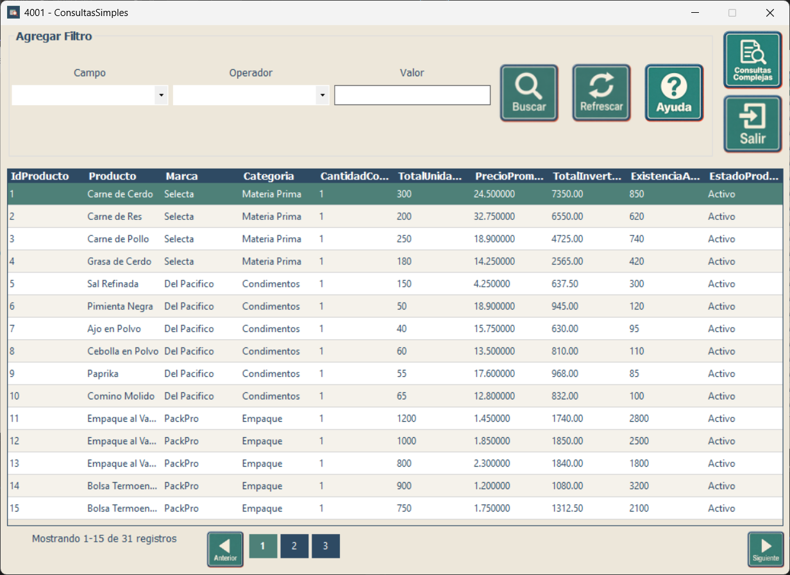

Capacitación - Consultas
Búsqueda rápida mediante filtros simples
Búsqueda rápida mediante filtros simples
Esta pantalla permite filtrar los registros mostrados en la tabla utilizando un campo, un operador y un valor. Es la opción recomendada cuando necesita realizar una búsqueda rápida sin combinar varias condiciones.

| Botón o control | Función | Cómo usarlo |
|---|---|---|
| Campo | Indica qué columna se utilizará para realizar la búsqueda. | Abra la lista y seleccione el campo que corresponda al dato que desea encontrar. |
| Operador | Define la comparación que se aplicará al campo seleccionado. | Seleccione uno de los operadores disponibles en la lista. |
| Valor | Contiene el dato que será comparado durante la búsqueda. | Escriba el texto, número o valor correspondiente al campo elegido. |
| Buscar | Ejecuta la búsqueda con el campo, operador y valor seleccionados. | Complete los controles del filtro y luego presione el botón. |
| Refrescar | Recarga la tabla y permite volver al listado actualizado. | Úselo para quitar el resultado de una búsqueda anterior o actualizar los datos. |
| Ayuda | Muestra este manual de uso. | Presiónelo cuando necesite consultar las instrucciones de la pantalla. |
| Consultas Complejas | Abre la pantalla para trabajar con consultas guardadas o con búsquedas que requieren mayor configuración. | Úselo cuando una consulta simple no sea suficiente para obtener la información que necesita. |
| Salir | Cierra la ventana actual. | Presiónelo cuando haya terminado de trabajar. |
| Anterior / páginas | Permiten desplazarse entre las páginas de resultados. | Use los controles inferiores cuando la tabla contenga más registros de los que se muestran en una sola página. |